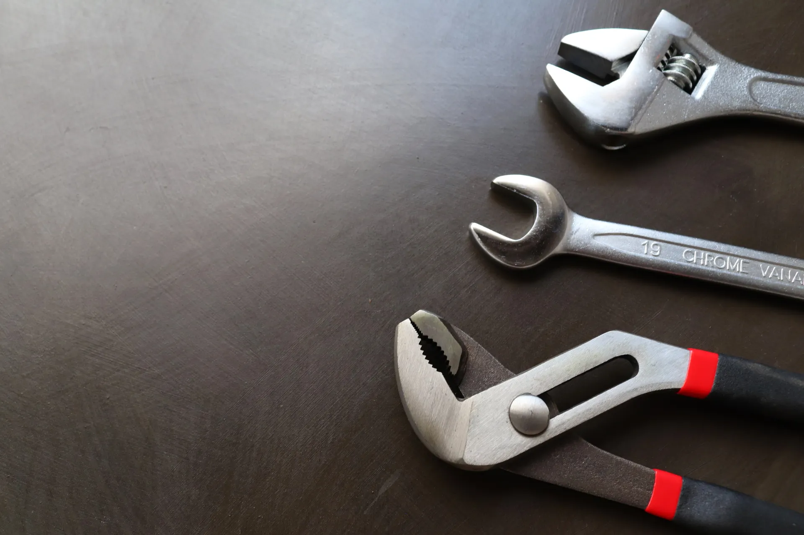
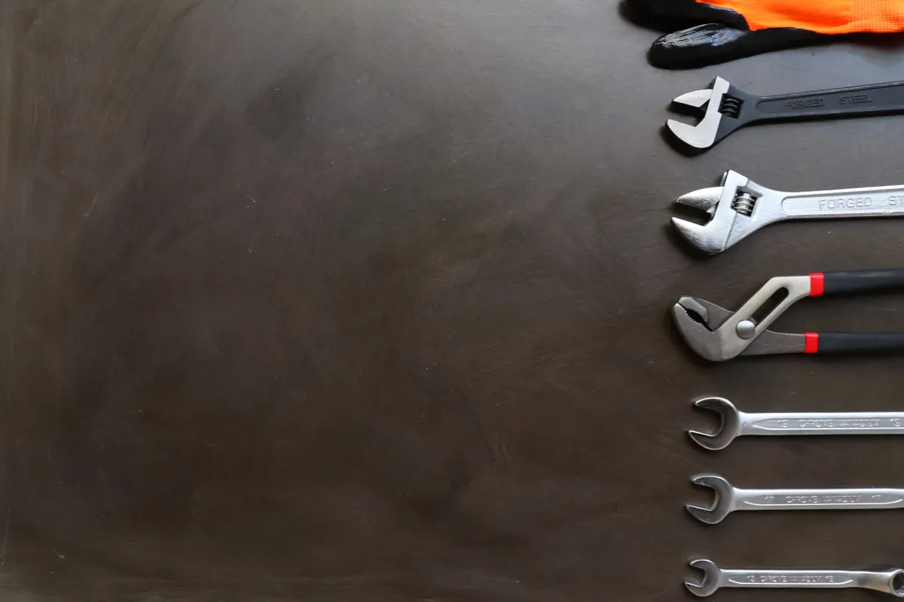
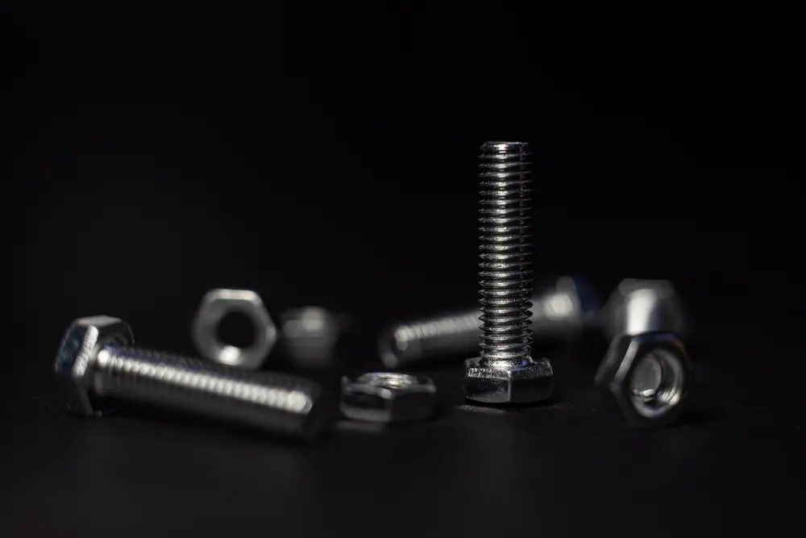
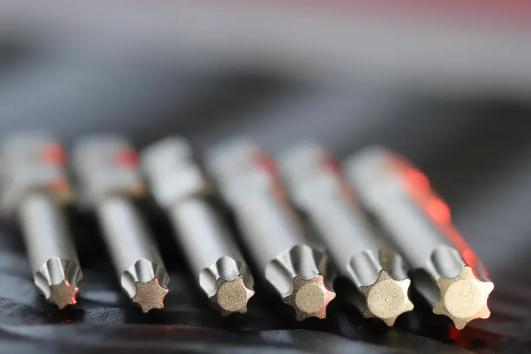

THE HARDWARE WORKSHOPFERRETERÍA / EL BOSQUE
FERRETERÍACORRALES.
EL BOSQUE
· CÁDIZ11670 / ES
· CÁDIZ11670 / ES

MATERIA / FORMA / FUNCIÓN
El lenguaje
de lo útil.
ESTUDIO DE MATERIALES
LA FORMA SIGUE
A LA FUNCIÓN.
Metal, geometría y precisión.
Una mirada al universo de la ferretería.



Una composición visual del sector.
Las imágenes son ilustrativas y no indican disponibilidad de productos en Ferretería Corrales. Para consultas, llama al 956 716 358.
NOMBRE PROPIO. DIRECCIÓN CONCRETA.
FERRETERÍA
CORRALES.
Ferretería ubicada en la calle La Rosa, en El Bosque, Cádiz.
EL BOSQUE · SIERRA DE CÁDIZLOCALIZACIÓN DEL ESTABLECIMIENTOEL BOSQUE / 11670
DESTINO: FERRETERÍA CORRALESDIRECCIÓN EN GOOGLE MAPS ↗